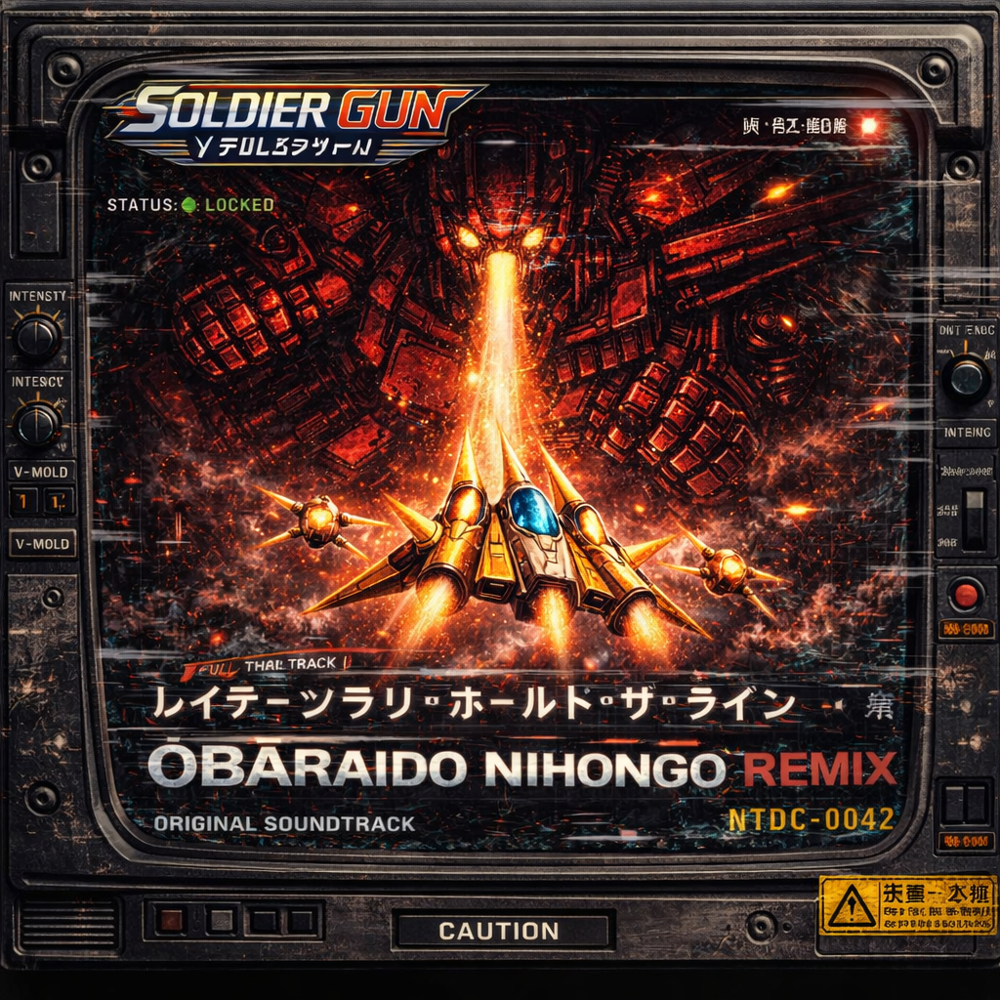
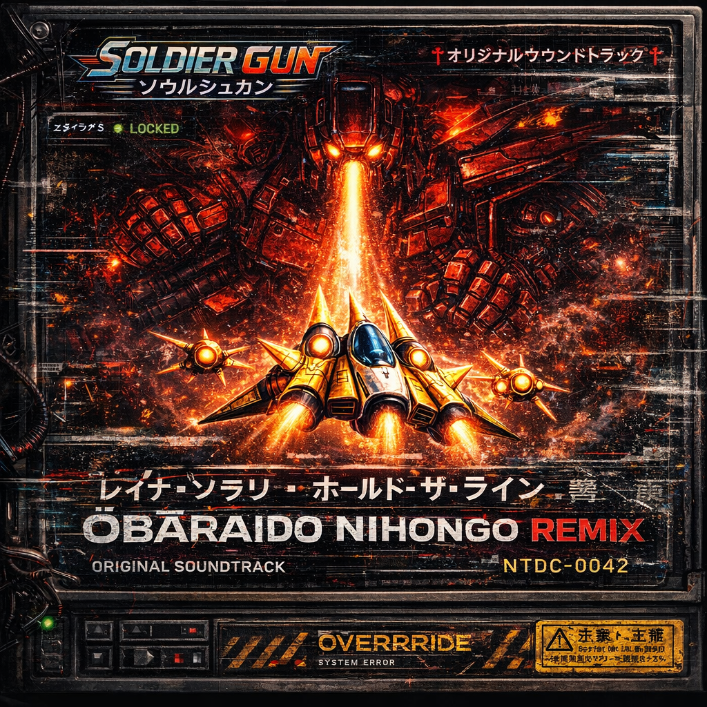
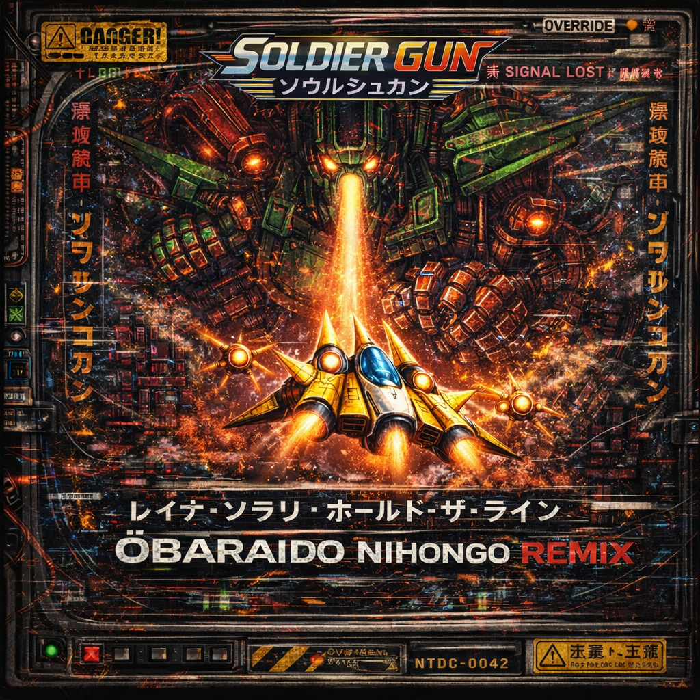
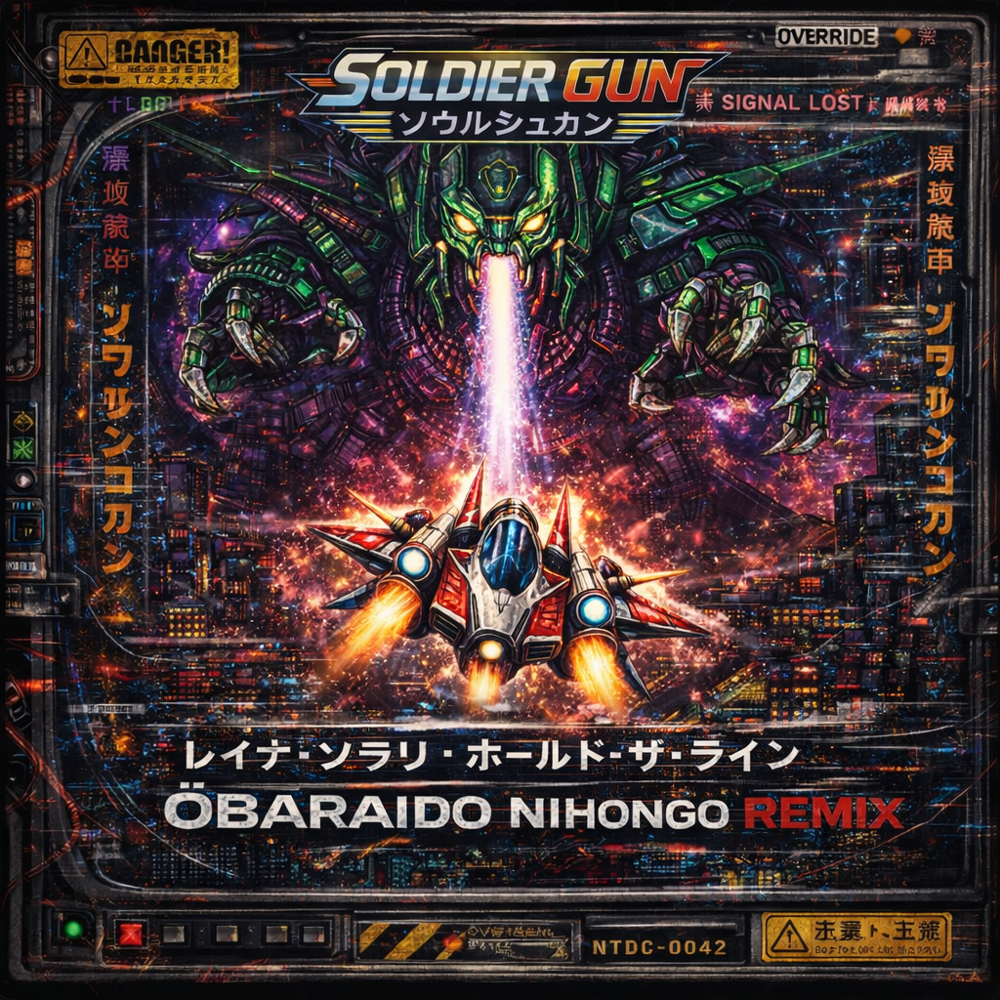
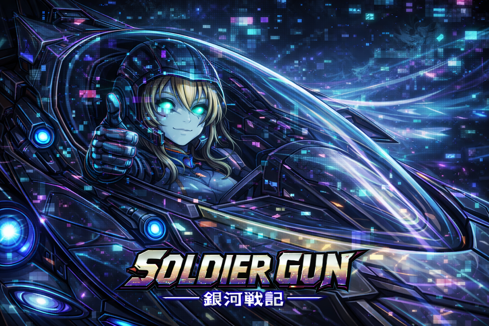
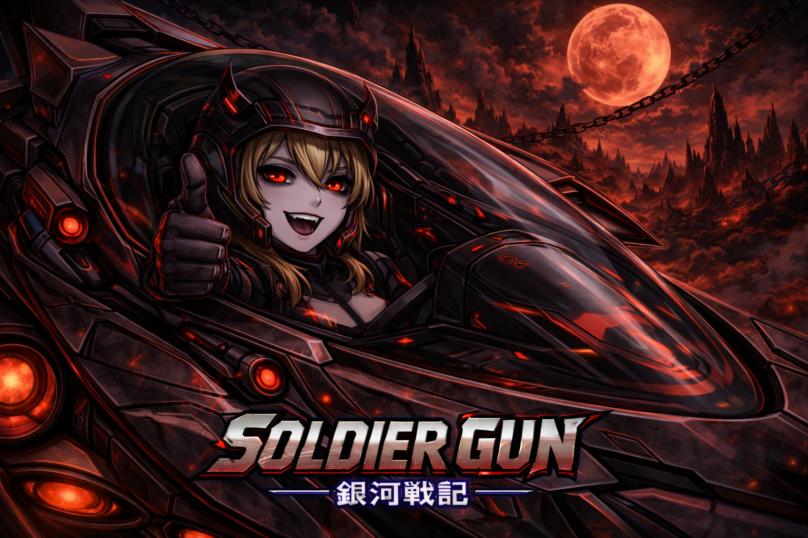

Playable Layer
Ship Animation Testing
This standalone prototype layer lets you steer the current ship sprite directly in the browser. Strafe left and right, tap Space to fire, and modulate thrust with Up and Down to push the boosters harder or ease them back.
Left / A strafe left
Right / D strafe right
Up / W more thrust
Down / S less thrust
Space fire
Throttle
100%
Fire Rate
Arcade Pulse
Prototype Build
Soulshugan Steering Test
Soundtrack Release
Reina Solari: Hold The Line enters the system.

Soundtrack Cover Testing
Alternate single states



Reina Solari: Hold The Line
OBARAIDO NIHONGO REMIX / ULTRA REMIX
We’re proud to present the first official SOLDIER GUN soundtrack release - a high-energy, multi-layered audio drop that fuses classic arcade roots with modern cyberpunk intensity, now expanded with a third full-length version.
This soundtrack download is completely free, and everything else related to the SOLDIER GUN project will be free as well.
Full Single Playback
Stream both complete tracks directly on the page, or grab the ZIP archive with the full soundtrack set and cover variations.
Reina Solari - Hold The Line
Original Track
OBARAIDO NIHONGO REMIX
Remix Track
OBARAIDO NIHONGO ULTRA REMIX
NEW Track 3
SOLDIER GUN - Soundtrack Release - 13.04.2026 by SlimShady
Reina Solari: Hold The Line, the OBARAIDO NIHONGO REMIX, and the new OBARAIDO NIHONGO ULTRA REMIX mark the first official soundtrack release for the project. This now plays as a three-track transmission: one version rooted in bright arcade momentum, one pushing the signal into overload, and one escalating that corruption into an even more unstable final form.
The original track captures the spirit of classic shoot 'em up games, starting with sharp forward motion before expanding into something more cinematic and emotional. The remix takes that structure and tears through it with industrial pressure, command-style fragments, layered voices, and a final breakdown into static. The new third track pushes the release even further, acting like a hotter, more unstable transmission spike for visitors who want the most extreme version of the signal.
Style & Influences
- Classic shoot 'em up soundtracks (PC Engine era, Gate of Thunder)
- Retro CRT and analog signal aesthetics
- Dark sci-fi ambient and cinematic storytelling
- Industrial and cyberpunk audio design
- Japanese arcade culture and command-style voice motifs
Cover Artwork
- Game assets from SOLDIER GUN
- Original spaceship and boss designs
- Japanese poster-style typography
- Heavy glitch, distortion, and CRT-inspired overlays
- Multiple visual "system states" from clean signal to full corruption
This is not just a soundtrack. It's a signal from inside the system.
Universe Core
A single pilot across multiple states of power.
Project Identity
Soldier Gun blends late PC Engine shooter readability with a more elaborate lore structure: one ship, one heroine, multiple divergent routes. The project centers on transformation without losing silhouette or identity. The ship stays recognisable. The pilot changes in energy, tone, and mythic alignment.
- Main pilot: Reina Solari (レイナ・ソラリ)
- Callsign: Valkyrie-01
- Ship: Soulshugan
- Dark form: Reina Noctis (レイナ・ノクティス)
Route Structure
Light PathAngel Ascension
Dark PathDemon / Vampire Evolution
Corruption PathZombie Instability
Transcendence PathAI Singularity
Creator Transmission
The project comes from a lifetime of shooter obsession.
Slim Shady

Soldier Gun is created by Slim Shady, a long-time retro-game enthusiast and dedicated shoot-'em-up fan whose history with the genre goes all the way back to the original PC Engine era. After getting into the hardware in the late 1980s, the fascination never faded. Fast arcade shooters, bold cover art, HuCard and CD releases, obscure hardware variants, and the particular style of Japanese console shooters all became part of a lifelong collecting and playing habit.
That passion grew into a serious collector's relationship with the platform: not just the games, but the machines themselves. The collection spans major PC Engine hardware including the PC Engine LT, PC Engine GT, Super CD-ROM², PC Engine Duo, SuperGrafx, and other variations, alongside a near-complete library of games. The same love extends to other core 16-bit systems too, especially the Mega Drive, Super Nintendo, and Super Famicom. Repeated trips to Japan helped deepen that connection to the culture, the hardware history, and the aesthetic roots behind this project.
Why this project exists
Soldier Gun is not meant to be a sterile clone of an old shooter. It is a personal love letter to that era, built from the perspective of someone who still actively plays, studies, and collects these systems today. The goal is to carry forward the energy of PC Engine shooters while letting the presentation, universe, and soundtrack evolve into something original.
This project is also intentionally experimental in how it is being made: Codex is part of the creative process as an AI collaborator, helping translate spoken ideas into code, systems, copy, structure, and production momentum. Soldier Gun is both a game universe and a proof that an AI-assisted development workflow can still feel personal, obsessive, and full of human taste.
PC Engine Collector
Shmup Lifelong Fan
Japan-Inspired Aesthetic
AI-Assisted Production
Transformation Matrix
Forms currently defining the tone of the world.
Reina Solari (レイナ・ソラリ)
Base form. Balance, humanity, and the default combat identity.
Reina Aetheris
Elite precision state. Enhanced targeting, perception, and control.
Reina Solaris
Golden ascendant power route. Overcharge, burst damage, full offensive authority.
Reina Lumina
Celestial salvation route. Shields, healing, and radiant energy projection.
Reina Noctis (レイナ・ノクティス)
Abyssal sovereign route. Hellfire, rage, and destructive field pressure.
Reina Sanguis
Crimson predation route. Control, drain, and elegant battlefield dominance.
Reina Blight
Infected-core corruption route. Toxic spread, instability, and body-horror pressure.
Reina Nexus
System override route. Hacking, digital weapons, and multi-target machine supremacy.
Artwork Preview
Good-route radiance and evil-route breakdown.







Soundtrack Direction
Title music, stage music, and route-specific atmosphere.
Current music system draft
The title shell already rotates artwork and soundtrack states. The current design splits the music into two atmospheres: good and evil. Good-route visuals pull from the uplifting and mission-oriented soundtrack pool. Evil-route visuals are locked to darker omake and corrupted-route music.
The inspiration behind this direction comes from multiple sides of retro game music history: the hard-edged action legacy around Turrican and Manfred Trenz, the unmistakable melodic force of Yuzo Koshiro, and the kind of larger-than-life shooter scoring that made late arcade and console soundtracks feel like full combat mythologies. Soldier Gun aims to absorb that energy and reshape it into something personal: part PC Engine shimmer, part Mega Drive aggression, part sci-fi opera.
Title themes
Stage themes
Endings
Instrumentals
Omake / Evil remixes
🎧 Soundtrack & Audio Design
SOLDIER GUN blends multiple audio styles to create a unique sci-fi atmosphere that supports both gameplay intensity and narrative immersion.
The soundtrack combines retro-inspired CRT aesthetics, dark ambient soundscapes, and cyberpunk industrial elements. During Story Mode, audio is designed to feel like a live transmission, featuring electrical hums, signal interference, and distorted broadcast-style voices that echo themes of war-time propaganda and system control.
Musical influences include:
- 🎛️ Retro analog / CRT-era electronics
- 🌌 Dark sci-fi ambient (minimal, atmospheric tension)
- ⚙️ Industrial and cyberpunk sound design
- 📡 Military communication and transmission audio
Rather than traditional melodies, the audio focuses on texture, tension, and immersion, evolving from machine noise into subtle musical layers — reinforcing the feeling that the player is receiving a classified signal from within the game world.
Featured track concepts
Use the preview controls to sample the current soundtrack direction while reading the audio design notes beside it.
-
Soldier Gun - Title Theme 1
Fixed opening theme
-
Soldier Gun - Title Theme 2
Alternate main title atmosphere
-
Stage 3: Arc Vale Breach
Multi-part assault scoring energy
-
Stage 4: Meridian Fortress
Carrier pressure and descent escalation
-
Stage 5: Astral Gate
Orchestral and late-stage cosmic route
-
Omake: Hell on Earth
Evil-pool infernal bonus soundtrack set
Behind The Build
The current prototype stack.
Engine
Soldier Gun is being built in Godot 4, but the goal is not to make it feel like a generic modern indie engine project. The idea is to use a current toolchain to chase the speed, clarity, and screen discipline of late PC Engine and 16-bit shooter design: fixed 4:3 framing, fast response, strong sprite readability, layered presentation logic, and a structure that can eventually support route systems, transformation states, soundtrack logic, and gallery-style extras without losing that tight arcade core.
Frontend shell
The front-end shell is basically our attempt to build the kind of deluxe “special mode” presentation that retro fans always wished old shooters had more of. Instead of dropping straight into a plain menu, Soldier Gun boots into a proper command-deck interface with rotating title art, music playback, mood-sensitive presentation, and window/fullscreen behavior designed to make it feel like a real desktop release. It is part launcher, part museum display, part love letter to the ritual of starting up a favorite game.
Artwork system
The artwork system is intentionally overbuilt in the best possible nerdy way. Rather than using one static title image, the project separates visuals into good and evil pools and rotates them dynamically. That means the title presentation can swing between heroic route energy and corrupted-route menace, with the shell pairing images to matching soundtrack moods. It turns the startup screen into something closer to an attract-mode gallery, where every launch feels a little different without breaking the universe logic.
Audio system
The audio side is being treated less like “add some background tracks” and more like cataloguing a real game soundtrack line-up. Title themes, stage themes, ending themes, instrumental cuts, omake tracks, and darker alternate mixes are all being grouped and named in a way that reflects how retro fans actually think about game music. The long-term idea is that Soldier Gun should feel like the kind of project where the soundtrack itself has lore, mood identity, collector appeal, and enough structure that even the website can preview it like a miniature soundtrack archive.
Project Roadmap
What is locked in, what is being built now, and what still needs design decisions.
Foundation
- DoneBase project code created
Godot project, repo structure, shell scripts, and source organization are in place.
- DoneGame shell created
Window shell, command-deck flow, title presentation, music bar, and menu routing are already working.
- DoneMenu and settings system drafted
Fullscreen, scanlines, shell controls, and front-end behavior are already defined in prototype form.
- DoneGitHub repo and automation workflow connected
Project files and website updates can now be synced together as part of one publishing routine.
Presentation Layer
- DoneSample title artworks created
Good-route and evil-route image pools are live and already rotate inside the shell.
- DoneMusic player and soundtrack preview system created
The title shell and website can both present curated music states instead of static background audio.
- DoneInitial soundtrack catalog assembled
Title, stage, ending, instrumental, and omake tracks are now sorted into a usable structure.
- In ProgressArtwork expansion and curation
More key art, route-specific imagery, and stronger category organization are still being added.
- PlannedGallery function
The Omake folder and future art categories will become a browseable in-game and website gallery later.
Gameplay Decisions
- Next Major MilestoneStart the actual game engine layer
The next big phase is moving from shell/presentation into enemy logic, stage flow, scoring, and real combat systems.
- PlannedDefine ship feel
Speed, acceleration, response, hit feel, and how Soulshugan should move need to be tuned deliberately.
- PlannedDesign weapon system
We still need to lock weapon types, power-up behavior, support units, bombs, and route-specific combat identity.
- PlannedCreate sample combat assets
Ships, enemies, bullets, explosions, bosses, HUD layout, and score display all need first-pass production art.
- PlannedDefine scoring and options
High-score logic, caravan-style pacing, difficulty, lives, and option behaviors still need formal design decisions.
Devlog Shape
The latest three updates stay here. Older entries move into the archive.
Ship animation testing layer added to the website
Update: A new browser-based Ship Animation Testing section is now live on the website with a steerable Soulshugan prototype layer, white-dot starfield backdrop, keyboard firing, and thrust-driven booster intensity so the current idle and strafe animation tests can be reviewed in motion instead of only as sprite sheets and GIFs.
Project structure cleaned up and website/archive flow refined
Update: The project folder structure was reorganized into a cleaner split between game, project, website, and tools, the Godot project was smoke-tested and repaired after the move, the website navigation was tightened up, and the devlog now rotates older updates into a dedicated archive page instead of keeping the entire history on the front page.
Hero section rebuilt with new Reina Solari artwork and concept media
Update: The website intro has been restructured again, replacing the old hero text panel with a new Reina Solari image card, keeping the AI concept video as a decorative showcase element, and tightening the top-of-page presentation into a cleaner, more graphic-forward project landing section.
AI concept video added as the new hero visual
Update: The website hero section now uses a custom AI-made concept animation based on Soldier Gun cover artwork. It is clearly labeled as decorative promo material rather than gameplay footage, and the source clip has also been archived in the project artwork folders as concept video reference.
Older Updates
Open the full archive for earlier project logs.
The archive page keeps the older updates in the same visual style, with the newest archived entry shown first.
Open Older Updates